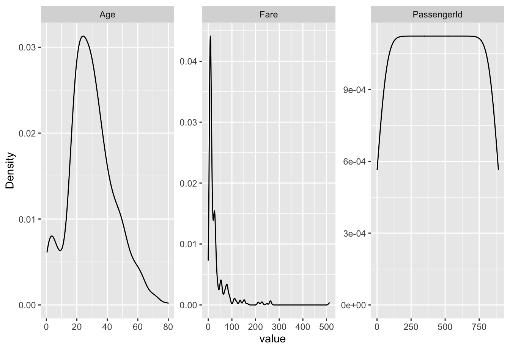
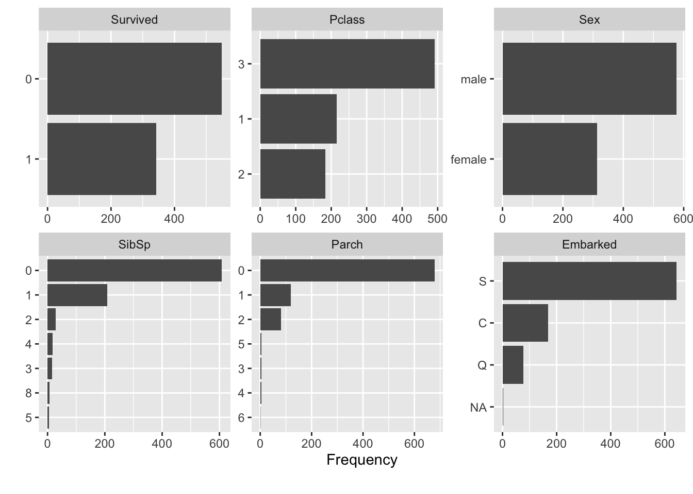
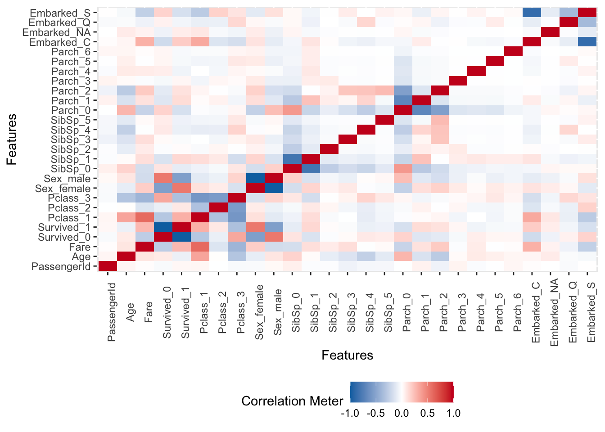
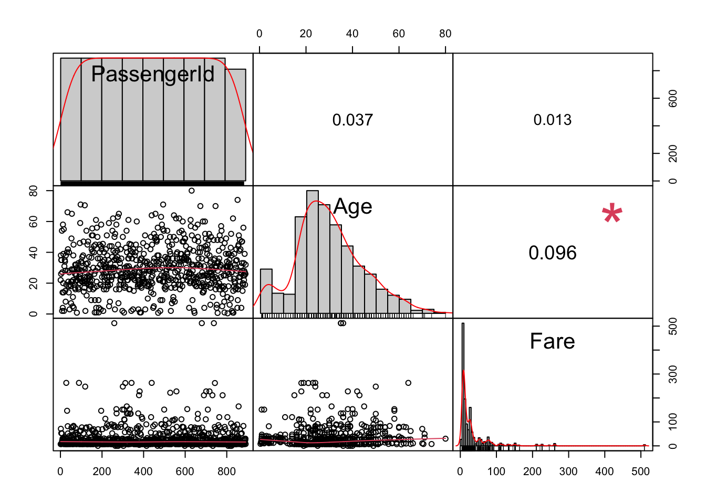

Chapter 5 EDA —— View data
I try to understand the data structure and data distribution use many tools.
5.1 simply see data
we can find how missing values distributed in our datasets. and we try to plot them by bar plot.
describe(train)## # A tibble: 12 × 8
## variable type na na_pct unique min mean max
## <chr> <chr> <int> <dbl> <int> <dbl> <dbl> <dbl>
## 1 PassengerId dbl 0 0 891 1 446 891
## 2 Survived fct 0 0 2 NA NA NA
## 3 Pclass fct 0 0 3 NA NA NA
## 4 Name chr 0 0 891 NA NA NA
## 5 Sex fct 0 0 2 NA NA NA
## 6 Age dbl 177 19.9 89 0.42 29.7 80
## 7 SibSp fct 0 0 7 NA NA NA
## 8 Parch fct 0 0 7 NA NA NA
## 9 Ticket chr 0 0 681 NA NA NA
## 10 Fare dbl 0 0 248 0 32.2 512.
## 11 Cabin chr 687 77.1 148 NA NA NA
## 12 Embarked fct 2 0.2 4 NA NA NAdescribe(test)## # A tibble: 11 × 8
## variable type na na_pct unique min mean max
## <chr> <chr> <int> <dbl> <int> <dbl> <dbl> <dbl>
## 1 PassengerId dbl 0 0 418 892 1100. 1309
## 2 Pclass fct 0 0 3 NA NA NA
## 3 Name chr 0 0 418 NA NA NA
## 4 Sex fct 0 0 2 NA NA NA
## 5 Age dbl 86 20.6 80 0.17 30.3 76
## 6 SibSp fct 0 0 7 NA NA NA
## 7 Parch fct 0 0 8 NA NA NA
## 8 Ticket chr 0 0 363 NA NA NA
## 9 Fare dbl 1 0.2 170 0 35.6 512.
## 10 Cabin chr 327 78.2 77 NA NA NA
## 11 Embarked fct 0 0 3 NA NA NA5.2 Missing values checking
missing in train data
profile_missing(train)## # A tibble: 12 × 3
## feature num_missing pct_missing
## <fct> <int> <dbl>
## 1 PassengerId 0 0
## 2 Survived 0 0
## 3 Pclass 0 0
## 4 Name 0 0
## 5 Sex 0 0
## 6 Age 177 0.199
## 7 SibSp 0 0
## 8 Parch 0 0
## 9 Ticket 0 0
## 10 Fare 0 0
## 11 Cabin 687 0.771
## 12 Embarked 2 0.00224missing in test data
profile_missing(test)## # A tibble: 11 × 3
## feature num_missing pct_missing
## <fct> <int> <dbl>
## 1 PassengerId 0 0
## 2 Pclass 0 0
## 3 Name 0 0
## 4 Sex 0 0
## 5 Age 86 0.206
## 6 SibSp 0 0
## 7 Parch 0 0
## 8 Ticket 0 0
## 9 Fare 1 0.00239
## 10 Cabin 327 0.782
## 11 Embarked 0 05.3 Plot Missing values By DescTools
Use these Package make us easier understand data.
We can easily know two column have the most missing values.
- Age : double type column
- Cabin : characters type column
We can drop column Cabin obviously,but how is the Age column?
We need more exploration to stand our operations.
Plot missing in Train data
PlotMiss(train)
train<-train%>%select(-Cabin)Plot missing in Test data
PlotMiss(test)
test<-test%>%select(-Cabin)5.4 Plot Missing values By DataExplorer
Plot missing in Train data
plot_missing(train)
Plot missing in Test data
plot_missing(test)
5.5 values distribution checking
before impute missing value ,we need know how data distribute.
And explore if there are association among variables.
we plot the distribution by some tools.
plot_density(train)
plot_bar(train)## 2 columns ignored with more than 50 categories.
## Name: 891 categories
## Ticket: 681 categories
5.6 Correlation among variables
now we know the distribution in train data.
But can we use a simple Mean/ Mode/ Median to Fill in missing value ?
We need more clues to uncover missing values.
it’s useful to check if missing value is associated with other values.
So we use corr.test to check it.
drop NAs of Age column ,then plot a Correlation fig.
plot_correlation(train[!is.na(train$Age),])## 2 features with more than 20 categories ignored!
## Name: 714 categories
## Ticket: 542 categories
we can plot continuous variable and give a numerous Correlation coefficient.
split_columns(train)$continuous%>%chart.Correlation()